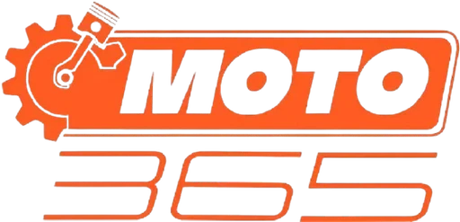
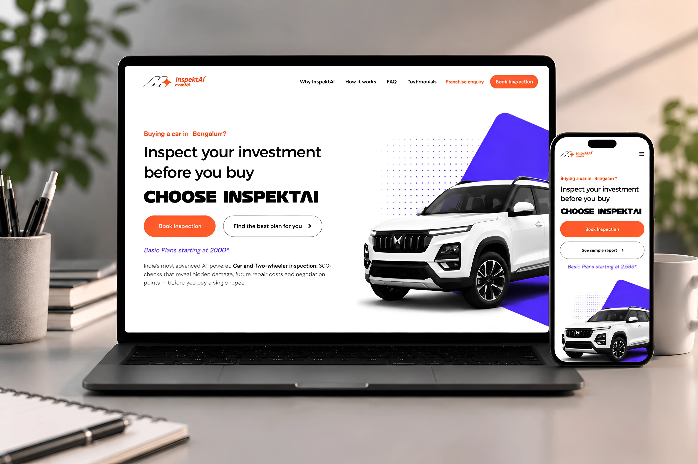

AUTOMOTIVE SERVICES · PRODUCT DESIGN · 2025—26
The experience
around the car
is the real product.
One connected ecosystem for buying, inspecting, servicing and enjoying a vehicle — designed across the moments between the drive.
INSPECTION READY300+ points · one clear report
THE VEHICLE01
THE DECISION02
METALLIC CARMINEPBR STUDIO LIGHTING
HORIZONTAL DRAG · Y AXIS
01EXPLODED VIEWPANEL LIFT · HINGED DOORS · RUNNING GEAR
LIVE PRODUCT ECOSYSTEM · 2025—26A LIVE PROJECT CASE STUDY ↘
01THE SYSTEM02 / 06
FROM A SINGLE SERVICE TO A CONNECTED JOURNEY
A car purchase is a moment.
Car care is a whole relationship.
At Automoto, I worked across the customer journey and the tools behind it. When the company split in April 2026, the products continued under Moto365 while Automoto became a separate company. The brand changed; the work carried forward.
FEB 2025Joined Automoto
APR 2026Moto365 stands alone
ONE OWNER · FOUR DIFFERENT NEEDS
THE PORTFOLIO, IN PRACTICE
Different tools.
One clearer route.
Each product solves a different job. My work moved between customer-facing experiences and the operational systems that make those experiences possible.
01 / INSPECTION
M365REPORT READY
2021 · SUV · 42,800 km86/100
ExteriorGood EngineGood TyresReview
InspektAI
Pre-delivery inspection for new and used cars. A structured inspection becomes a report customers can scan, understand and use.
View the case study ↗02 / BUYER GUIDANCE
←Find your inspection●
What are you
looking at today?
looking at today?
▣Used car›
✳New car PDI›
InspektAI Assist
A guided service entry point that helps a buyer choose the right inspection and move toward booking with less guesswork.
View the case study ↗03 / GARAGE OPERATIONS
 LIVE PRODUCT VISUAL
LIVE PRODUCT VISUALMotoDoc
Garage management shaped around real service workflows, with TecDoc collaboration supporting parts and vehicle data.
View the case study ↗04 / OWNER COMMUNITY
WEEKEND
DRIVE CLUBCOMMUNITY RUN · 08:30 AM
DRIVE CLUBCOMMUNITY RUN · 08:30 AM
↗ 24 drivers are joining this route
Moto365 Club
A social space for automotive enthusiasts to connect around builds, knowledge, community and the joy of the drive.
View the case study ↗05 / BRAND SYSTEM
FROM

TO
ONE SYSTEM · MANY TOUCHPOINTS
Rebranding
A new, ownable identity system that could connect a parent brand, products, service reports and digital experiences.
View the case study ↗06 / MARKETPLACE
moto365Parts & care⌕♡
BUILT FOR THE WAY YOU DRIVEFind the right
fit for your car.Shop parts ↗
fit for your car.Shop parts ↗
Marketplace
An e-commerce direction for automotive products and services, structured to help owners browse by need and vehicle fit.
View the case study ↗SELECTED LIVE PRODUCT VISUALS + CONCEPTUAL WORKFLOW SUMMARIES · OPEN A PRODUCT TO EXPLORE ITS CURRENT EXPERIENCE
02THE PDI EXPERIENCE03 / 06
INSPEKTAI · CUSTOMER LANDING PAGE
Make the risk
easy to see.
A buyer should understand the value of an inspection before being asked to book one. The redesign brought trust signals forward, made the process scannable and showed what the report actually contains.

01TRUST BEFORE THE ASKClear promise · visible proof
02SHOW THE OUTPUT300+ points · one AI report
INSPECTION LANDING PAGE · RESPONSIVE DIRECTIONDESKTOP + MOBILE
Audit what slows understanding
The source-page review flagged visual clutter, dense sections, weak CTA visibility and trust content appearing too late. Those symptoms pointed to one core job: help a cautious buyer make sense of the service quickly.
Give information a useful order
Lead with the customer question, make the inspection journey explicit, and bring credibility and the booking action into a clearer visual hierarchy.
Turn a claim into a preview
“300+ checks” becomes more concrete when paired with a report preview, clear findings and next steps — reducing the amount of interpretation left to the buyer.
✓
A live customer touchpointDesign and product work shaped for a service already in market.
View live landing page ↗03THE REBRAND04 / 06
A NEW COMPANY, A MORE FLEXIBLE SYSTEM
From inherited
identity to ownable.
When Moto365 separated from Automoto in April 2026, it needed a visual system that could stand on its own and work consistently across products, reports, dashboards and customer-facing sites.
Built for a service company.
Literal, mechanical and strongly tied to the previous company’s visual language.
HEAVY · ORANGE · SERVICE-LED
Designed to move across screens.
A cleaner geometric mark, lowercase wordmark and a flexible digital-first brand system.
REFINED · DIGITAL · CONNECTEDMove from gear-and-piston imagery to an abstract motion mark.
Make the identity legible at app-icon, report and dashboard scale.
Keep distinct product colors within a recognizable family.
BRAND SYSTEM SCOPELOGO · COLOR · TYPOGRAPHY · ICONOGRAPHY · GUIDELINES · DIGITAL APPLICATION5 PRODUCT LOGOS IN THE FAMILY
04HOW I WORKED05 / 06
FROM SIGNAL TO SHIPPED EXPERIENCE
Designing for the
whole operation.
My remit was broad by necessity. The work connected customer-facing UX with internal tools, brand systems and day-to-day operations.
UNDERSTAND
Read the journey
Audit the touchpoint, map the service flow, and find where a customer or operator has to guess.
OUTPUT · FRICTION POINTS + PRIORITIESSHAPE
Make the next step clear
Structure information around the job, sketch hierarchy, then prototype the decisions that matter most.
OUTPUT · FLOW + INTERFACE DIRECTIONDELIVER
Connect screens to service
Design across responsive pages, product UI, live reports and admin workflows — then carry the system into use.
OUTPUT · SHIPPABLE, CONNECTED SURFACESIMPROVE
Keep learning in market
Use customer questions and operational bottlenecks to keep tuning the experience after launch.
OUTPUT · ITERATION IN THE LIVE SYSTEM✳Product designer at the center.
THE ROLE WAS NEVER JUST SCREENS
Product designer at the center.
Useful wherever the work needed me.
UX RESEARCH & AUDITPRODUCT UIBRAND & LOGOLANDING PAGESADMIN DASHBOARDSLIVE PDI REPORTSAI WORKFLOW AUTOMATIONOPERATIONS
05WHAT MOVED06 / 06
REPORTED PROJECT OUTCOMES
Less uncertainty.
More momentum.
Across the service and product ecosystem, clearer journeys and faster internal flows supported measurable business outcomes.
Increase in sales reported across key services
01 —— 04Less time to complete a booking
02 —— 04Faster admin and operational flow
03 —— 04More trust and clarity at the point of decision
CLARITY → CONFIDENCEMetrics shared by the project team. They reflect the combined product, service and operational effort; they are not attributed to design alone.
WHAT I LEARNED
The best interface
often starts off-screen.
Trust needs an order.
Proof works harder when it appears before a visitor has to commit.
Operations are part of UX.
A clear customer promise depends on the internal flow delivering it.
One brand can hold many voices.
Consistency is a system of useful rules, not identical screens.
A LIVE ECOSYSTEM
Made to be used.
Explore the public products and company site as they continue to evolve.
MOTO365 · 2025—26Keep moving
Back to the beginning ↑
THE ROAD AHEAD IS A SYSTEM TOO
Keep moving
the experience forward.
Back to the beginning ↑PRODUCT · BRAND · SERVICE · OPERATIONSDESIGNED ACROSS THE JOURNEY